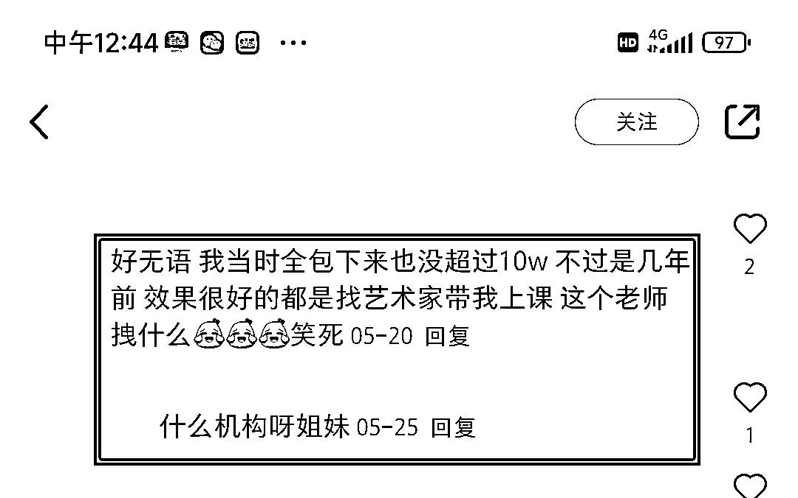
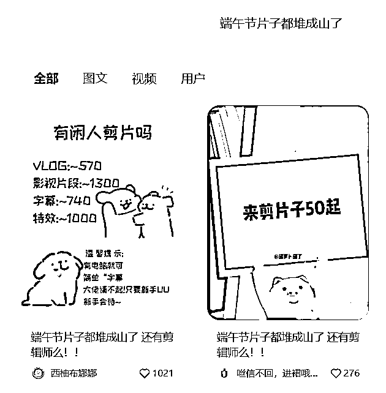

来源：https://swh7uo861x5.feishu.cn/docx/U67Wd1ImBoLqmZxwoq1ckW7Jnwg
最近我在看中医，于是小红书给我推送了不少这方面的帖子，偶尔刷到一个《发药方免费算价格》
每天氪金买中药的我马上点了进去，博主引导大家在评论区发方子，免费估价，笔记赞藏不多，但评论却有300多条，全是询价的，如图
当然博主不会直接在小红书平台帮你算价格，私聊话术为“小红书有违禁词，我们换个地方说”，然后主动让用户发微信号
加入私域后，由朋友圈可得这是一个中药微商，我把在医院大夫开好的药方照片发给他，他给算了价格，果然要便宜，因为服中药是个漫长的过程，算下来每天一副也能省不少钱，你看，不成交都难了
作为一个微商，当你想要在公域平台宣传自己产品的某种优势（或者是价格，或者是品质）的时候，不妨曲线救国，换个思路引流，用”免费帮你……“的思路引流
消费者对购买新的产品可能不感兴趣，但对于已经购买过的产品都有损失厌恶心理，谁也不希望自己花冤枉钱，买个便宜货甚至假货，这时候你免费帮他们看价格和品质，告诉他们有没有买贵，这个定心丸实在是太有诱惑力了，而且珠宝和中药这种东西买第一次就会有第二次，你喂了定心丸后用户再想买就会首先找你，妙啊
实拍，live图或者百度上找，live图更能增强真实性，让用户相信你有一手货源
四个字，“中药算价”
直接找个底图，或者用小红书自带的图片编辑器写上字就可以
以下是一批“双非上岸港大”的营销笔记，用自己录取通知书/聊天截图/梦校生活四宫格做封面，正文讲述自己“本人是菜鸟，以为没希望，但经过中介老师的帮助居然申上了梦校”的故事。
由于故事讲述得很真诚，这类笔记数据都不错，如图
重点来了，评论区非常疯狂，全都在“求中介”
评论区引导对方私信然后留微信，微信里再推中介名片
你只需要引流，不用谈单，有难度吗？没有！
先说说封面怎么做吧
封面按照从易到难排序，我分成三类——
第一步：找录取通知书底图，直接去百度“港大录取通知书”，应有尽有
第二步：在小红书里直接发布图片，点击下方文字和贴纸，即可得到同款效果
字里行间突出一个真实性的代入感和意料之外的惊喜，如图——
聊天截图怎么做就不用说了吧，用自己的小号配合或者用聊天截图制作软件，都能搞定！
依旧用百度去搜索“港大录取通知书”“香港大学校门口”“香港大学教室”，然后随便找一个学生气质的女孩做主人公，用手机相机自带的图像编辑器拼四宫格即可
拼图效果——
好，咱们再来说说正文怎么写——
我根据正文结构总结出了这么个公式：
收到录取通知书之后的惊喜——回忆当时对自己学历的不自信和找中介时的压力——遇到好的中介老师并表达感激——给学弟学妹们一些过来人的建议
注意一定要提到你的中介给你提供的各种帮助，这是软广部分，结尾的给学弟学妹的建议最好干活一些，为了提升赞藏数据的。
一般在评论区“求中介”的，作者都会回复评论引导对方主动私信自己，减少主动打招呼的次数。
然后在私信页，作者一般会让客户主动发微信，主动加对方，一怕跑单，二防被吞违规，降低账号风险。
如果客户要求作者发联系方式，作者会以下两种隐晦的方式，一个是图片上加花字，一个是穿插文字的方式，说明微信号。
其实这样的引流方式是比较原始而且危险的，我也仔细想了想为啥用这种显眼的办法引流，可能是群聊和小号的方法营销味道比较重，容易引起留学生的怀疑，而这样的真实逆袭故事笔记最大的竞争力就在于留学生对于学姐逆袭故事的信任，所以一般在引流的过程中，作者的话术都是非常亲切，非常贴近女大学生形象的，甚至能和你聊上很久，如图——
加过去微信的朋友圈也要做好布局，装修上的地区定位在名校所在地，换上真人头像，封面和朋友圈图片展现真实的女大学生日常等，增强信任感。
给大家介绍一下留学圈的截流玩法——卷死的高客单价赛道，懒得起ip，甚至懒得发笔记，怎么也能“借鸡生蛋”精准引流？
看看以下这篇笔记，乍一看是学生对无良作品集机构的吐槽贴，朴素真实
但其实你点进它的主页就会发现一股亲切的营销号味道，所有笔记都是千篇一律学生和作品集机构互怼的剧情
中介专门用来假装学生人设，发对自己所在机构的吐槽，这是个很新颖的玩法，新颖在哪里呢？
大家知道，2024年，留学圈在小红书名声已经太差了，谁不知道小红书上学长学姐全是中介广子托儿，既然已经骂声一片了，所以与其正着给自己打广告，不如跟着学生骂自己，反而能圈死精准的留学生流量
⚠重点来了，请看笔记的评论区——
多么便宜的精准广告位，这就是这个笔记发布的目的：引发留学生共鸣，然后用自己的诸多小号在底下给和自己合作的机构打广，并且广子很丝滑
聊天截图，直接用自己的小号和大号发对话，然后截图下来，剧本一般都是：作品集机构的老师用不友好的口气怼学生没钱/没实力的离谱行径
也可以用案例2里说的微商聊天截图软件，超级简单
正文怎么写呢？
大致内容就是我和中介的battle过程和吐槽对方的离谱操作，越是细节越是典型越是能引起留学生共鸣越好，注意了！这里也可以安排大量的广告位，比如这篇笔记里，就在结尾处拉踩了三家机构
第一步：安排几个小号在评论区留言，话术大致为“看了博主吐槽的机构，我深有同感，当时也被坑了不少，后来找到了靠谱的终于上岸了，哎我不是广告，也不要都来问我”

第二步：等着留学粉评论，越是这么说，越是会有一堆人问你，你在哪家学的啊？
如果没人问的话，也可以用另一个小号问自己“求推荐”，然后大家就会跟风
这个时候你引导对方主动私信你，然后用语音条告诉微信号，在微信上把机构的名片推给留学生，这里的引流操作和案例2一样，我就不再赘述
需要注意的是⚠评论内容和小号人设要好好设计，滴水不漏，让人感觉你很真诚
这是一批用财富显化的图书作为封面的笔记，标题和金钱强相关，看得出来背后应该有和显化或者吸引力法则相关的产品。
打开笔记内页，正文部分正是对笔记封面中图书的介绍，声称这本书可以帮助财富困境的人显化金钱等等。然后置顶自己的评论“对书籍感兴趣的回复666”
评论区非常热闹，还有很多人在”接好运”“发财”，能看出都是对财富有明确需求的人，包括一些负债者。
这就让我想起了今年上半年很火的“正念语句”类笔记，封面用纯色或者渐变底图，直接一句心理暗示的话，制作非常简单不说，由于自带祝福性，评论区好多”接好运”，成为了一种暴力起号的方法，流量很猛。但可惜大部分正念语句账号都只涨粉不变现。
而咱们的这个案例，后端带上了商品，我加上了博主的微信，从朋友圈可以看出产品体系为：
398元的社群已经满了500人，光一个产品就变现20w了
这是开头的那篇笔记的全部内页，五张图，制作应该一点不难吧？
在搞定设计里新建一个1242*1660px的画布，把手机实拍的图书内页照片拖上去，红色框和箭头在搞定的元素库里都可以找到，选中文字在右侧挑选颜色大小间距就ok了
当然，你的产品就是书，家里肯定要准备一本啊！

我们再来看它的正文——
“我发现了一本超棒的书，能让潜意识天天都进账呢。
每次打开这本书呀，就感觉被一种很神奇的力量吸住了，每一页都闪闪发光，特别吸引人。
它就像帮我实现小目标的加速器一样，轻轻松松就让我实现了 10000+的小目标哟！
感觉每天都离梦想更近了一大步呢！
晚上睡觉前翻一翻，让潜意识吸收书里的好东西，第二天早上醒来，就感觉整个人都充满了积极的能量和动力！
要是你也想让自己的潜意识天天进账，那就快点去买这本《精准显化》吧”
写作方式就是“结果前置”，把看完这本书之后你取得的结果，明确的显化了多少钱，数字化地呈现出来，结尾再次种草这本书，语气真诚就可以啦。
第一种：建群，关联笔记到群聊，群聊里放隐蔽的联系方式，话术是“身高XXX体重XXXXXX"，置顶成群公告
第二种：引导对方私信，发语音条或者图片
最近看到了一批蹭端午节热点招募剪辑师的，千篇一律的标题《端午节片子堆成山了，还有剪辑师吗？》一般会在封面和正文里声明“大佬请不起！只要新手！可以带！”

这句话精确锁定了目标用户：会一点剪辑的初级剪辑手，这也为后面转化做好了铺垫
赞藏不多，但看评论区，都是精准用户积极互动
引流新手剪辑粉到后端的变现方式大致有几种——
第一种，联络剪辑需求方，做中间商赚差价
第二种，卖面向新手剪辑师的知识付费课程
第三种，卖剪辑师圈子，剪辑师接单群等
首先，爆款封面图中的动漫形象是线条小狗，百度一搜全都有，好找吧~
在搞定设计网页版里新建一个1242*1660px的画布，把下载好的线条小狗图片拖拽到画布里
配上文字，即可：
有闲人剪片吗
VLOG:~570
影视片段:~1300
字幕:~740
特效:~1000
温馨提示:有电脑就可简单“字幕
大佬请不起!只要新手UU新手会带~
第一步：笔记关联群聊，评论区有问“求带”的，一律回复群聊链接，如图

第二步：在群聊里发引流笔记
根据笔记里的提示，我来到一个公众号，关注后点击“剪辑接单”，弹出来的是一个影视后期特训营的收集客资页面，面向群体正是会一点剪辑的初级剪辑手
这个号主是把流量导到公众号上，这个0元剪辑课落地页只是为了收集客资，后面还会有更多的知识付费产品，还有一些号主是导到微信里卖社群
但这个案例给我们的启示是——有时候我们想吸引某部分客户，变个思路动作，想想这批人挣谁的钱，把要钱变成给钱，引流会顺畅多了
我是小红书引流陪跑教练宫颖，希望上述的案例对你有所启发！
欢迎链接~